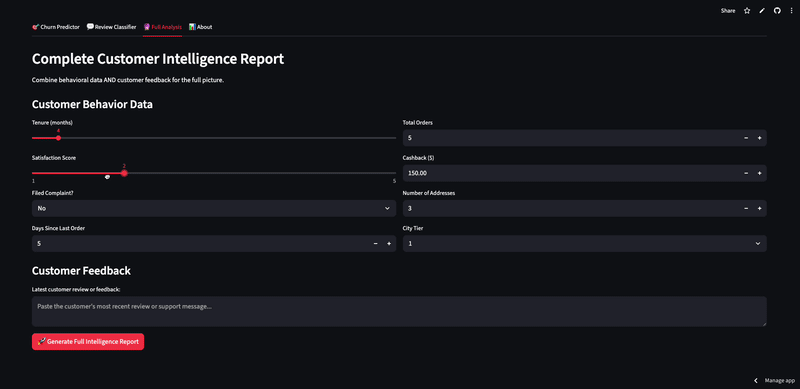
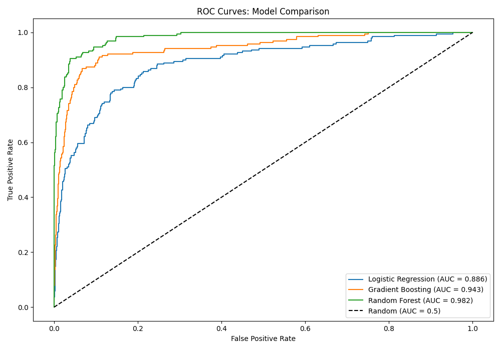
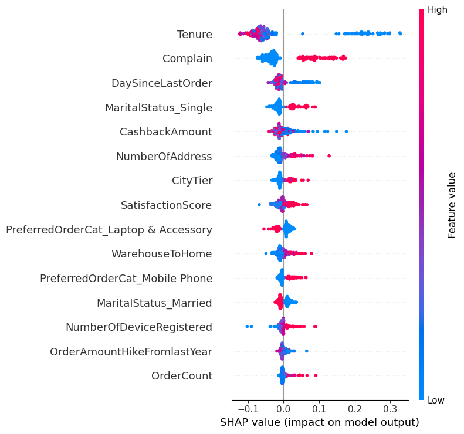
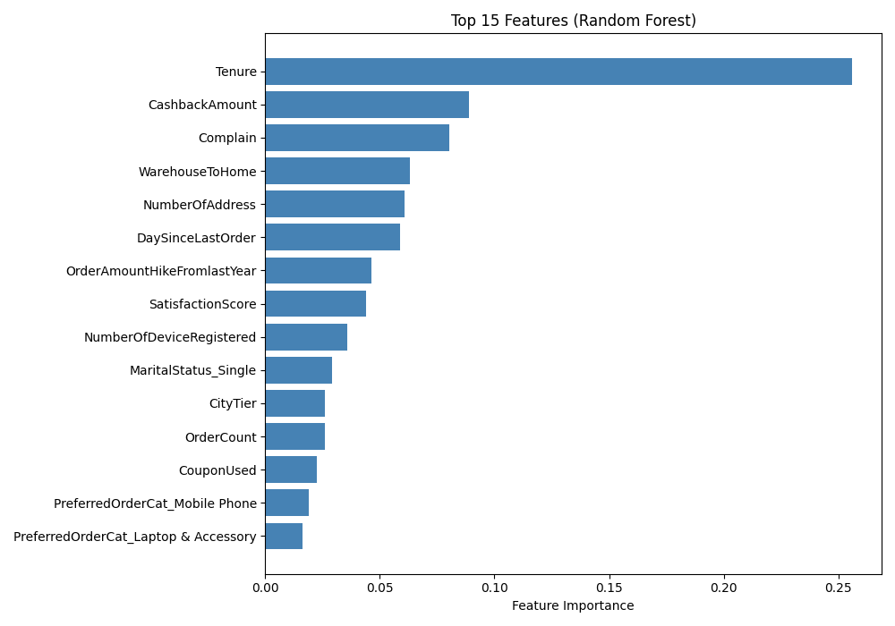
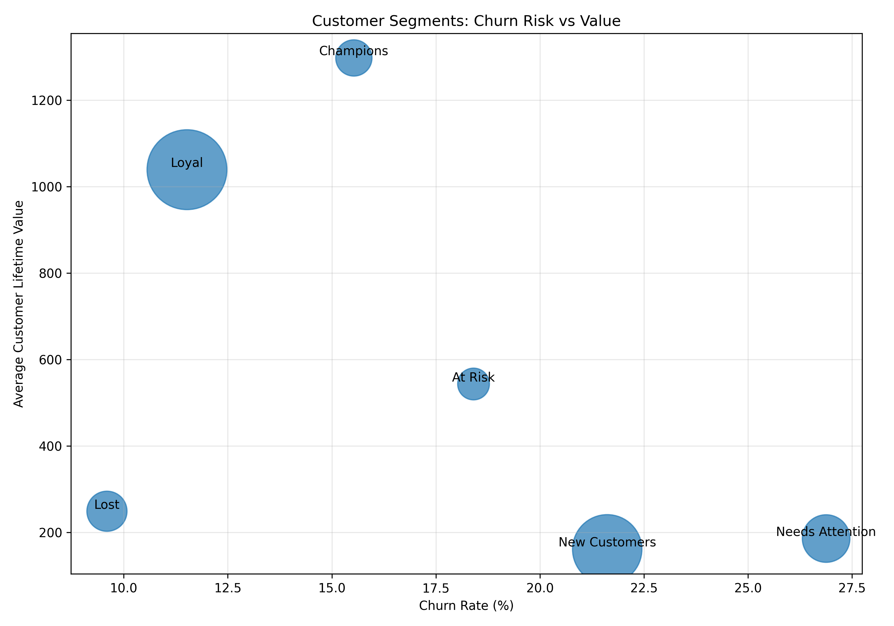
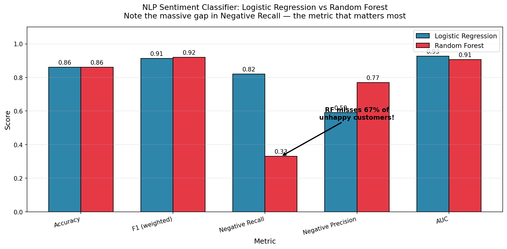

Retail Customer
Intelligence Engine

E-commerce and retail businesses lose a significant portion of revenue to silent churn — customers who stop buying without ever complaining. The raw signals (declining orders, rising complaints, stale engagement) are buried in transactional data, and written feedback compounds the problem: negative reviews often get averaged out by a strong headline sentiment score.
The goal: build a single intelligence layer that predicts who will churn, explains why, segments customers by value, and flags negative feedback before it becomes a cancellation.
Two parallel pipelines, unified into one dashboard:
- Structured side (churn): Trained four models on a 5,630-customer dataset — Logistic Regression, Gradient Boosting, Random Forest, and a custom PyTorch neural network with a hand-built Dataset class, training loop, and dropout regularization. Random Forest won on F1 and calibration.
- Unstructured side (NLP): Built a TF-IDF + Logistic Regression sentiment classifier on 22,641 customer reviews, with a confidence threshold routing uncertain predictions to human review.
- Business layer: Added RFM segmentation (Champions, Loyal, At Risk, New, Lost, Needs Attention) and CLV estimation so predictions become actions.
Modeling: Python, scikit-learn, PyTorch (custom training loop + Dataset class).
Explainability: SHAP for global and per-customer feature attribution.
Data: pandas, NumPy for cleaning, encoding, imputation, and RFM feature engineering.
Deployment: Streamlit frontend, deployed to Streamlit Cloud via GitHub.
Random Forest — 98% test accuracy, 0.95 F1 on churn prediction.
SHAP analysis surfaced the top three churn drivers: tenure, complaint history, and days since last order — matching qualitative observations from retail work and giving the dashboard real explanatory power.
Deliberate metric trade-off: For sentiment classification, chose a threshold-based model that recalls 82% of negative reviews (vs. 33% for a higher-F1 vanilla Random Forest). The business cost of a missed complaint outweighs a false flag — a decision I'd defend in any stakeholder room.
Shipped: Unified Streamlit dashboard combining churn risk, RFM segment, CLV estimate, sentiment, and context-aware retention recommendations into a single report per customer.
The Problem
Subscription and e-commerce businesses lose 15–30% of customers annually. Most retention systems fail because they treat all churn as equally bad (losing a $12 customer doesn't justify a $20 retention offer), rely on structured data alone, provide predictions without explanations, and don't differentiate high-value loyalists from low-value drifters. This project addresses all four gaps in one unified system.
Model Comparison
| Model | Test Acc | F1 | Churner Recall | AUC | Overfit Gap |
|---|---|---|---|---|---|
| Logistic Regression | 88.8% | 0.611 | 52% | 0.886 | 1.1% |
| Gradient Boosting | 91.8% | 0.728 | 65% | 0.943 | 1.5% |
| Random Forest (deployed) | 98.3% | 0.948 | 91% | 0.999 | 1.7% |
| Random Forest (tuned, d=10) | 94.0% | 0.793 | 67% | 0.982 | 3.0% |
| PyTorch NN | 95.6% | 0.858 | 79% | 0.989 | 2.2% |
Only 16.8% of customers in the dataset churned. A naive "predict no churn" model would score 83% accuracy while catching zero churners — which is why F1 and churner recall, not headline accuracy, drove model selection. The default Random Forest was chosen over the tuned version because the tuned model dropped recall from 91% to 67% to gain a 1.3% reduction in overfitting gap. In a context where missing a churner is more costly than flagging a stable customer, that trade is wrong.

Confusion Matrix
| Predicted Stay | Predicted Churn | |
|---|---|---|
| Actual Stay | 935 | 1 |
| Actual Churn | 18 | 172 |
Of 190 actual churners in the test set, the model caught 172. Of the 18 it missed, the most common pattern was high-tenure customers with a single late complaint — an edge case where additional features (complaint resolution time, response sentiment) could close the gap.
Custom PyTorch Network
ChurnNet:
Linear(29 → 64) + ReLU + Dropout(0.3)
Linear(64 → 32) + ReLU + Dropout(0.3)
Linear(32 → 1) + Sigmoid
Loss: Binary Cross-Entropy
Optimizer: Adam, lr=0.001
Training: 100 epochs, batch size 32, StandardScaler features
Custom Dataset class wrapping pandas → tensors
Manual loop: zero_grad → forward → loss → backward → step
The PyTorch network was included to empirically validate the choice of Random Forest, not because deep learning was expected to win. On small tabular datasets with strong feature signals, tree ensembles outperform neural networks because they natively handle mixed feature types and capture non-linear thresholds without requiring scaling. Training loss decreased smoothly from 0.24 to 0.097 across 100 epochs — a healthy curve, just not a winning model.
SHAP Analysis
SHAP transformed the Random Forest from a black box into an auditable system. The top five churn drivers were tenure, complaints, days since last order, single marital status, and number of saved addresses — the last of which was non-obvious and possibly indicates customers shopping across multiple shipping contexts (gifting, multiple residences) being less stably engaged. SHAP and built-in feature importance were both included because they measure different things: built-in importance tracks usage frequency in tree splits; SHAP measures actual contribution to individual predictions using Shapley values from cooperative game theory.


RFM Segmentation & CLV
| Segment | Churn Rate | Strategy |
|---|---|---|
| Needs Attention | 26.9% | Top priority — promotions, satisfaction surveys |
| New Customers | 21.6% | Onboarding, first-purchase discounts |
| At Risk | 18.4% | Personalized retention offers, free shipping |
| Champions | 15.5% | Loyalty rewards, VIP treatment |
| Loyal | 11.5% | Maintain engagement, ask for referrals |
| Lost | 9.6% | Minimal investment |
CLV was estimated as CashbackAmount × OrderCount × (Tenure / 12) — intentionally simple, but enough to answer the question retention systems actually need to answer: "is this $20 retention offer worth sending to this customer?" RFM and CLV are deliberately used as outputs (business intelligence) rather than inputs (model features). When I tried adding them as features, performance dropped because they were derived from features already in the model — a useful early lesson in not double-counting signal.

Sentiment Model — The 82% Decision
| Model | F1 (weighted) | Negative Recall |
|---|---|---|
| Logistic Regression (deployed) | 0.913 | 82% |
| Random Forest | 0.920 | 33% |
Random Forest had the higher headline F1, but missed two-thirds of negative reviews. Logistic Regression caught 82%. The headline metric got worse; the system got better, because for sentiment analysis the business cost of a missed complaint outweighs a false flag. A 65% confidence threshold routes uncertain predictions to a human review queue rather than forcing a wrong answer — admitting uncertainty is more valuable than fake confidence.

The Full Analysis Tab
The deployed app's killer feature is the Full Analysis tab, which combines behavioral data and review text into a single intelligence report. It handles four distinct scenarios:
- High churn risk + Negative feedback → Critical: immediate intervention, root-cause complaint resolution
- High churn risk + Positive feedback → Quiet disengagement: customer is leaving without complaining; proactive outreach
- Low churn risk + Negative feedback → Vocal complaint, stable customer: quick fix preserves the relationship
- Low churn risk + Positive feedback → Healthy: maintain engagement, candidate for referral programs
Most retention dashboards stop at the prediction. This one acts on the combined signal.
What I'd Build Next
- Real-time monitoring for data drift and model performance degradation
- A/B testing framework to measure retention campaign lift
- Fine-tuned transformer (DistilBERT) for subtler sentiment signal